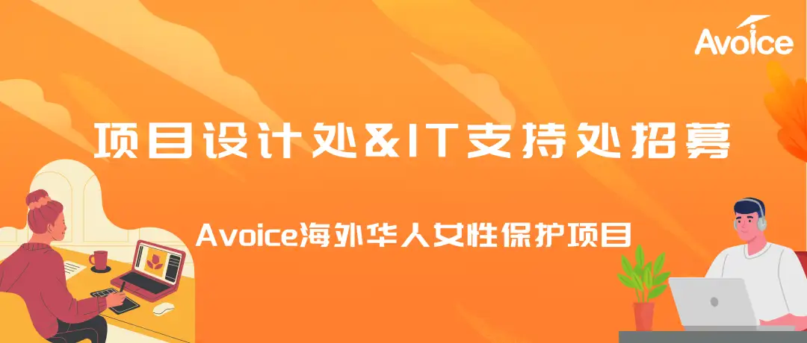
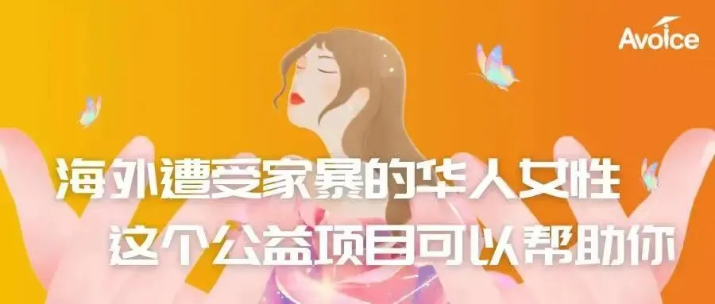
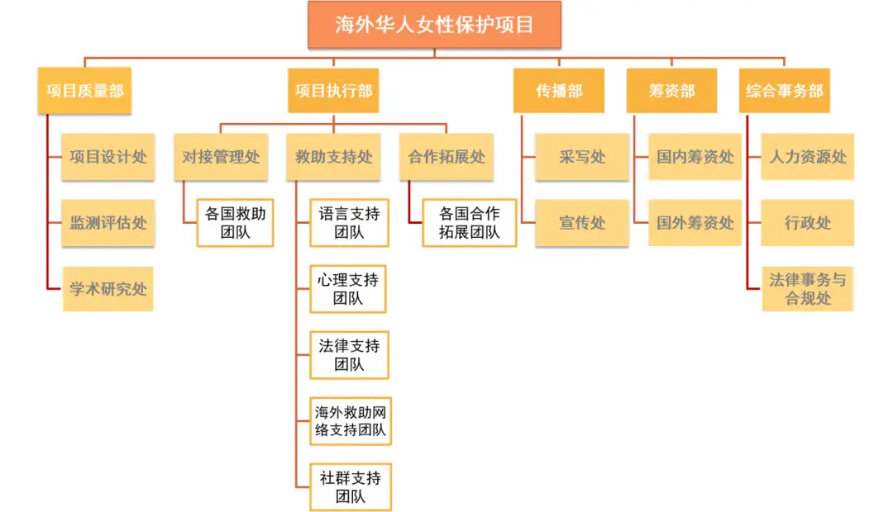

“
01 我们是谁
项目简介
Avoice 海外华人女性保护项目 致力于消除性别暴力、促进性别平等，为面临家暴威胁的海外华侨华人女性提供充分、持续的保护和救助。项目通过与政府部门、海外华人组织、社会组织、行业专家等建立合作网络，联合更广泛的青年公益力量，倡导公众对海外华人女性生活困境的关注和支持，为她们创造安全、平等的生存和发展环境，帮助她们从家庭暴力的受害者，成长为推动性别平等与保护弱势群体的倡导者和实践者。
项目简称“Avoice”取自 Against Violence to Overseas Chinese Women Program (海外华人女性保护项目的英文名称），意为用女性之声传递发展愿景，用青年之声呼吁性别平等，以昭然赤心宣告人文理念，以不渝之志唱彻使命长歌，致力于将公益的万千发声汇入到全球推进性别平等可持续发展目标的万钧宏音中！
欢迎通过以下链接了解更多关于 Avoice 海外华人女性保护项目的信息：

“Avoice 项目”整体组织架构

“
02 岗位招募
项目设计处
项目设计处的主要工作分成以下内容：
设计项目战略、项目实施规划、组织运营战略，以及优化工作流程和内外部的合作机制，并为各部门项目执行提供技术支持。
项目设计处负责人/成员（1-2名）
职位描述：
1. 项目顶层设计(Strategy Consulting)：
负责Avoice 新项目顶层设计（例如：无暴力空间，反暴力行动，女性就业促进和领导力发展）
2.组织运营战略(Operations Consulting) ：
利用飞书/管理系统来促进部门之间、部门内的高效合作
（例如：知识库搭建、 部门使用说明书、个人使用说明书、部门培训、工作流程优化设计等）
内部培训和对外合作机制：部门wiki ，汇聚重要文件和人员任务分配；部门使用说明书(主要针对对外合作)，部门内部信息管理（文档管理）
工作流程优化和设计：目前已经帮助救助对接处设计了个案管理系统，未来会有和其他部门的协作
3. 短期项目设计统筹 (Event Planning) :
联合多部门统筹，设计，执行短期项目（包括media campaign，event，roundtable等）
任职要求：
1. 有战略工作背景经验者优先
2. 有公益项目设计经验优先（类似ABC公益咨询经历也可）
3. 有活动策划/执行经验的校园经历者优先，可以参考咨询，外联，活动策划执行
IT支持处
IT支持处的主要工作分成以下内容：
开发Avoice网站，进行网页设计和数据分析，维护网站日常运营，并为各部门的项目活动提供IT支持。
网站开发维护
网页设计
以及数据分析
网页全栈开发成员（2-3名）
职位描述：
1. 参与Avoice的前端开发（或客户端开发）& 后端开发（或服务器端开发）
2. 设计新网站和基于网络的程序的架构， 开发应用程序编程接口 (API)
3. 开发更新以增强网站后端的可用性和功能， 维护网站的前端以确保其正常工作
4. 优化网站以确保它们适合移动设备
5. 与平面设计师合作开发有吸引力且功能强大的网站
6. 为网站创建服务器和数据库
7. 在系统开发生命周期 (SDLC) 的每个阶段监督项目
8. 与其他专业人士（包括 DevOps 工程师、网络安全专家、图形设计师和其他 Web 开发人员）合作
任职要求：
1. 已具备网页全栈开发经验，熟悉js/html/css，有react/django/express 等前后端框架经验优先
2. 不具备开发经验，但有条件有意愿学习（比如说 CS,Data,Engineering 等相关背景）
3. 熟悉用于前端开发的 HTML、JavaScript 和 CSS 等语言以及用于后端开发的 Java、Python 和 Ruby 等编程语言。
网页设计成员（2-3名）
职位描述：
1. 参与Avoice的网页设计
2. 根据视觉设计效果图开发前端代码，负责Web界面的交互设计实现、编辑、美化
3. 负责公司网站、产品和项目页面交互设计实现、编辑、美化，提高用户体验
4. 负责前端用户界面开发，保证每一个的浏览器兼容性，负责用户体验的改善、设计和实现
5. 配合后台开发人员实现程序的功能与流程
6. 参与公司各个项目的前端开发工作，根据设计图完成静态页的转化
7. 运用HTML+CSS+JavaScript技术对所参与的项目进行开发和维护，完成相关页面的改版需求，跟进开发过程中的bug
8. 与后台开发人员进行沟通以完成前后台的对接工作
任职要求：
1. 具备UI/UX设计经验，或对网页设计有自己的想法，愿意学习并与各内容产出部门沟通协调
2. 熟悉或者可以快速上手 Photoshop，Coreldraw，Frontpage，Dreamweaver 等网页设计工具
3. 能够运用网页设计工具，有网页设计经验为佳
数据分析师（2-3名）
职位描述：
1. 与项目设计处、监测评估处一起做组织影响力分析（Impact Analysis)
2. 与学术研究处共同做社会学，国际关系议题，女性议题，发展议题相关的基线调研（类似行业研究）
3. 对组织，行业，同业组织进行日常数据收集，清洗以及分析
任职要求：
1. 对数据逻辑敏感，具备统计学相关知识
2. 良好的语言表达能力
3. 具备利用Excel/Tableau/Python进行数据分析的能力，有Pandas/Matplotlib等工具经验为佳
4. 熟悉SQL，Python、R、SPSS其一， 熟悉主流数据库mysql、SQLServer，有数据可视化经验为佳
5. 对影响力分析/SROI/Impact Framework 有一定了解/经验为佳，有社科研究/学习/兴趣背景也可
“
03 工作收获
志愿者/实习证明：依据 Avoice 章程，工作6 个月以上可申请志愿者证书，工作满 1 年的成员可获得实习证明，工作优秀的成员可以参选季度和年度优秀志愿者
能力提升&项目署名：网站开发的经验以及成果可以放在Github 进行展示，网页设计可以放到自己的Portfolio 里作为经历。数据分析可以作为项目经历写到简历里，贡献突出的可以成为Project Manager，工作经历有助于进行咨询类，数据分析类，商务分析类求职
Avoice 人际网络和专家网络： Avoice 志愿者和Alumni 覆盖海内外各大高校（常春藤，G5，985/211 名校资源丰富），顾问均为资深公益，商业，科技圈人士，提供了高质量人际网络
日常奖励：对于工作认真负责，考核结果优异的成员，部门内部会提供相应的内部激励（包括但不限于奶茶、小奖品等等）
获得项目专家顾问的指导和推荐信
参加志愿者线上线下团建活动
加入国际青年志愿者网络校友会
项目合作伙伴的实习、活动内推
参与性别平等、女性保护与发展、青年赋能等相关领域的课题研究
与国内外公益机构、学术机构、基金会的合作交流机会
与来自世界各地、志同道合的伙伴一起学习成长
“
04 申请流程
由于工作性质不同，各个岗位的申请流程会有些许不同，详细情况如下
项目设计处申请流程
01
简历筛选
02
笔试初试
候选人需在 7 日之内完成笔试，由部门负责人进行审阅，若候选人完成状况良好，则负责人将对该笔试进行细致批注，并由 HR 将笔试题退给候选人返修
03
笔试复试
候选人需根据部门负责人的批注，对笔试进行修订，部门负责人将根据笔试最终成果决定候选人是否通过笔试
04
录取通知
05
入职培训
IT支持处申请流程
01
简历筛选
02
笔试初试
03
笔试复试
04
录取通知
05
入职培训
“
05 简历提交通道
可扫描二维码
或通过点击文章底部“阅读原文”提交简历
“
06 联系方式
如对上述岗位有疑问、或是申请过程中遇到问题，请联系以下各岗位负责人：
项目设计处
部门联系邮箱：[email protected]
IT支持处
部门联系邮箱：[email protected]
排版，封面制作 | 卫嘉怡
内容来源 | Avoice Team